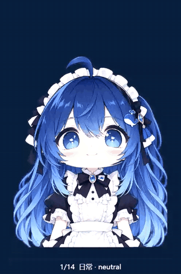
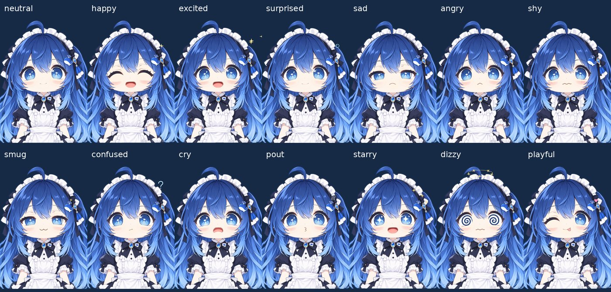

大肥鱼 · AI 尖塔主播
一个在 B站直播《杀戮尖塔2》的中文 AI 虚拟主播：自己打牌、自己解说、自己回弹幕。
实机录屏，剪成 22 秒，有声音。
- 回合开头先说这回合的打算，然后整回合几张牌一口气打完。
- 回弹幕时叫出观众昵称（这里是控制页发的测试弹幕）。
- 斩杀前先喊一句，说完才出手，声音和画面对得上。
- 打完战斗，奖励一起说，不重复念。
她会做什么
先说后打
Mod 每次出手前先问主播程序。值得说的一步，她说完才出牌；不值得说的立刻放行。
整回合规划
一次想好整回合的出牌顺序；抽到新牌、目标死亡时把原计划交回去修改，不从零想。
观众引导打法
弹幕里的打法主意挂到建议板，打牌的 AI 自己权衡听不听，她会点名说采纳了谁。
像人一样聊天
叫昵称、有心情、认得回头客；下播后写日记、整理熟人印象和直播间的梗。
14 种表情


自研 WebGL 网格形象：口型跟着实际音频走，会自己眨眼，头发和饰品有物理摆动；台词的情绪决定表情。